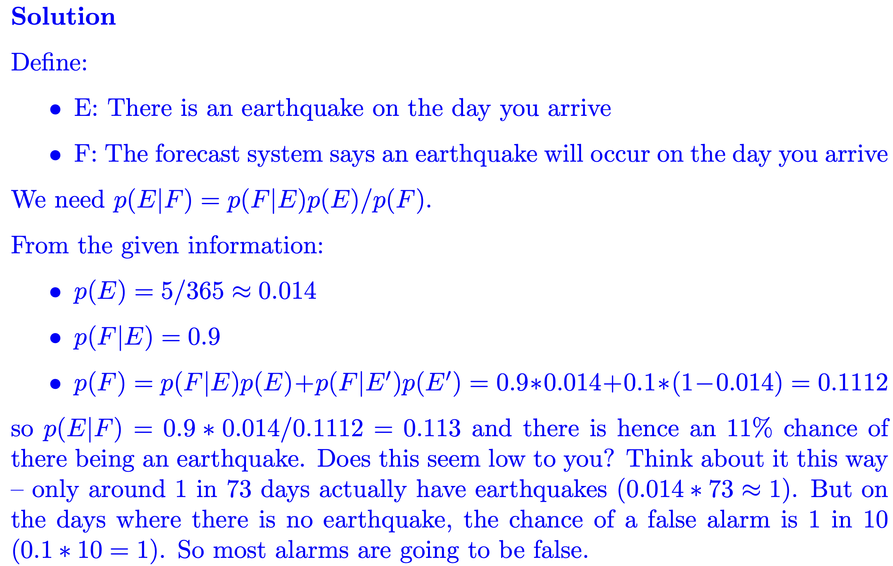
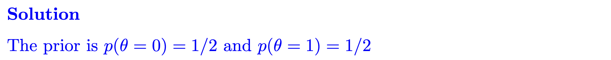
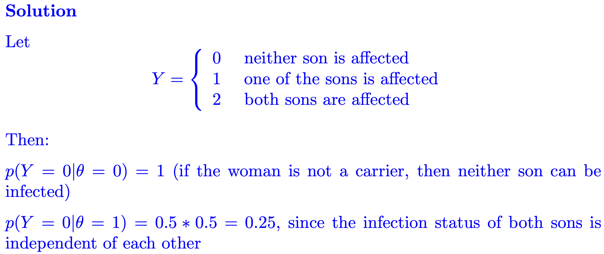

STAT0011
Decision and Risk
Week 1 Bayesian Inference
Exercise 1
Question 1
You are planning a vacation in Italy. Before packing, you hear that there might be an earthquake the day you arrive.
After consulting Google, you learn that in recent years there have been (on average) five earthquakes a year in the part of the country you are visiting (ignore leap years). Moreover, you learn that when there is an earthquake, the earthquake forecast service has correctly predicted it 90% of the time. However, when there was no earthquake, the forecast service incorrectly predicted 10% of the time that there would be one.
What is the probability that there will be an earthquake on the day you arrive given forecast of an earthquake?

Question 2
Consider a woman who has a brother with haemophilia, but whose father does not have haemophilia. This implies that her mother must be a carrier of the haemophilia gene on one of her X chromosomes and that her father is not a carrier. The woman herself thus has a fifty-fifty chance of having the gene.
The situation involving uncertainty is whether or not the woman carries the haemophilia gene. The parameter of interest θ can take two states:
Carries the gene (θ = 1)
Does not carry the gene (θ = 0)
Write down the prior distribution for θ using the above information.

The data Y is the number of the woman's sons who are infected. Suppose she has two sons, neither of whom is affected. Assuming the status of the two sons is independent, write down the likelihood function p(Y|θ) (if the woman is not a carrier then her sons cannot be affected, but if she is a carrier they each have a 50% chance of being effected).
